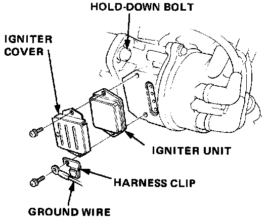
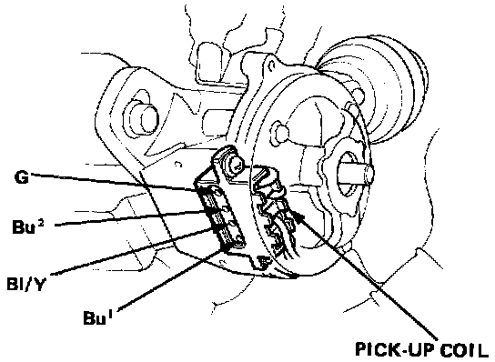
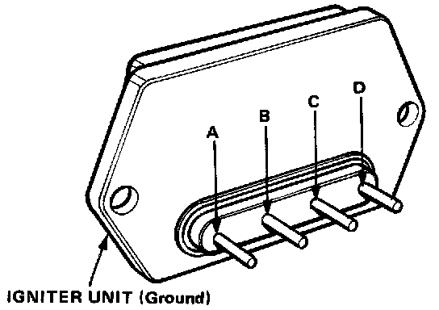

Sedan
SEDAN ONLY
Igniter Unit Test
1. Remove the distributor hold-down bolt, then remove the distributor from the cylinder head.
2. Remove the igniter cover and pull out the igniter unit.

3. Check voltage between the Bu1 terminal and body ground, then the BI/Y terminal and body ground, with the ignition switch ON.
There should be battery voltage.
NOTE: Two different wires have the same color. They have been given a number suffix to distinguish them (for example Bu1 and Bu2 are not the same).
4. Measure resistance between the G and Bu2 terminals on the pick-up coil. Replace the pick-up coil if the resistance is not within specifications.
NOTE: Resistance will vary with the coil temperature.
Pick-up Coil Resistance:
750 ± 100 ohms at 20°C (70°F)

5. Check for continuity in both directions between the C and D terminals on the igniter output.
(Rx 100 scale).
There should be continuity in only one direction.
6. Connect the ohmmeter positive probe to the A terminal and negative to the igniter unit (ground), then measure resistance of the igniter input.
(Rx 100 scale).
NOTE: Resistance will vary with the unit temperature.
Igniter Input Resistance:
500 ± 50 ohms or more at 20°C (70°F)
NOTE: When installing the igniter, pack silicone grease in the connector housing.